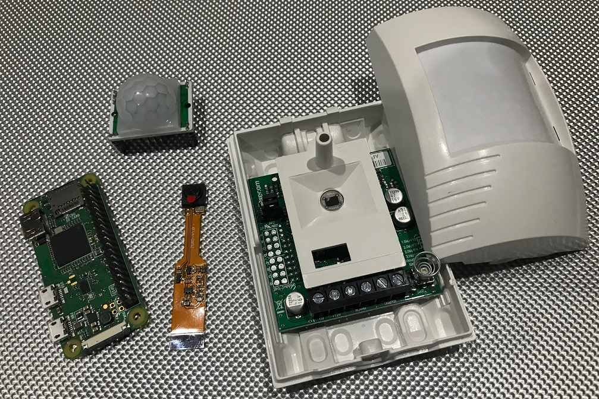
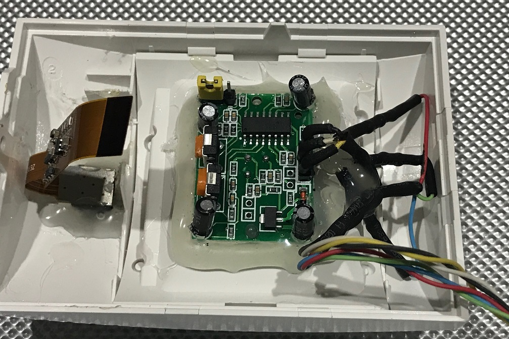
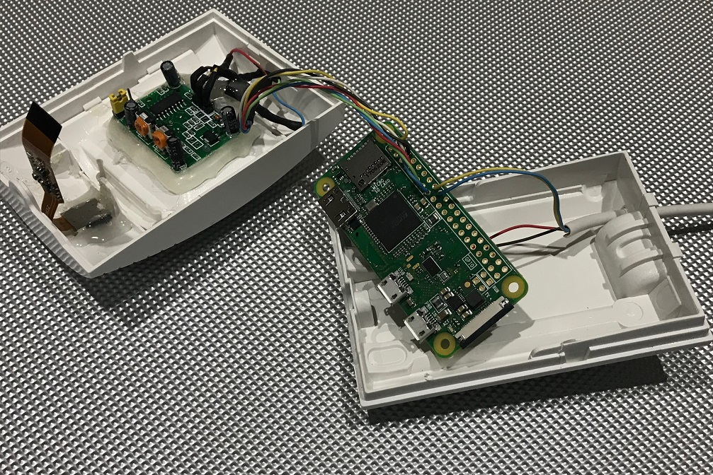
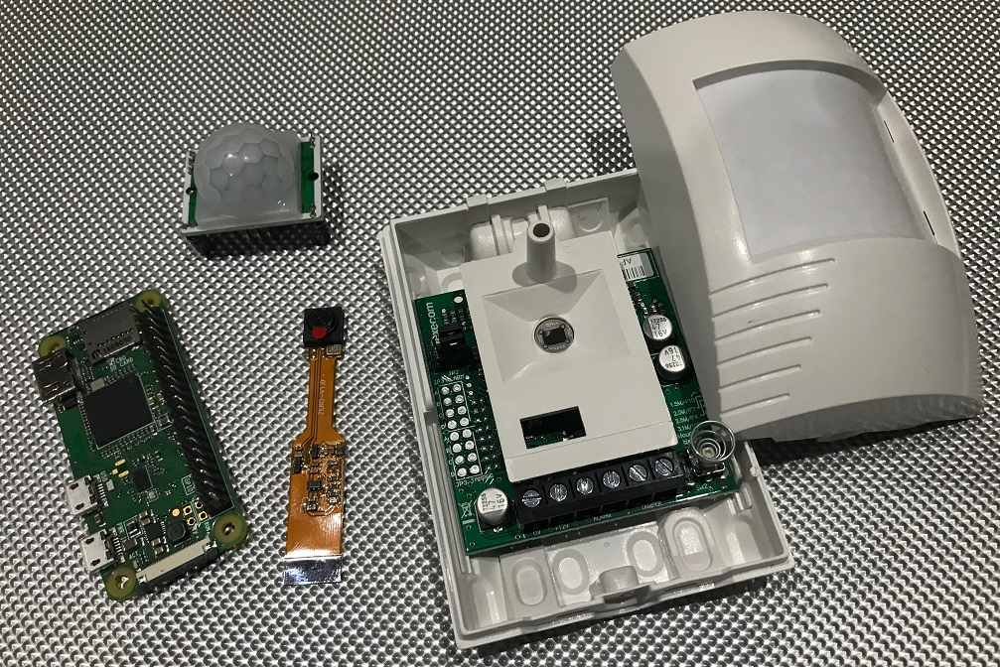
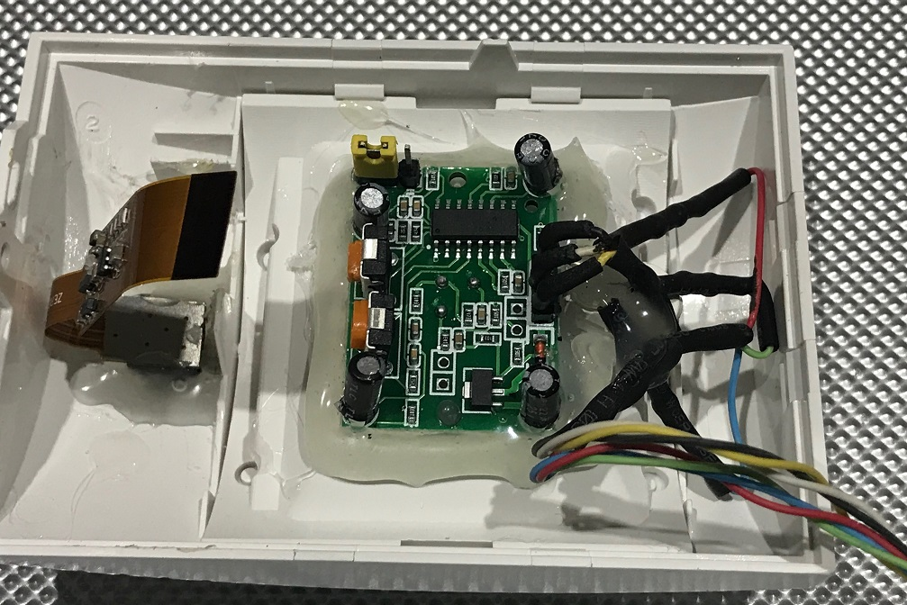
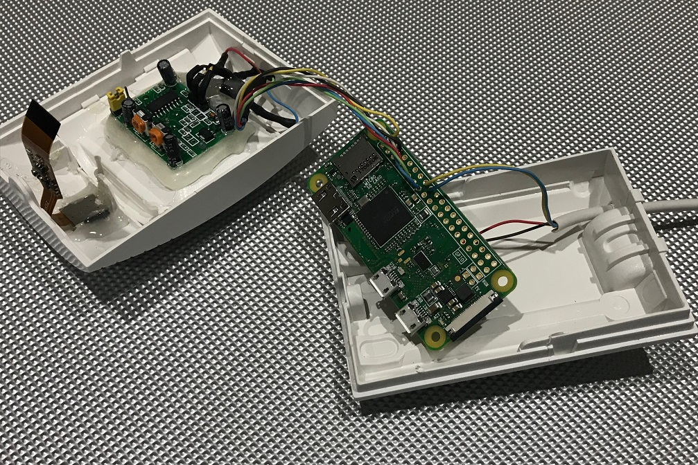

5MP Camera / Alarm PIR
SecuriPi

I used to be a alarm engineer and with over 20 years experience it only seemed fit that I should do something as a security project.
I bought a brand new Texecom Reflex PIR as it's what my other PIR's are and they are a standard size.
I took all the parts out as I was only
needing the body of it. There was a plastic spacing part that sat against the PIR pcb to stop any insects etc. getting into the lens part making it a
sealed optics. I modified the spacer to accommodate for the use of a PIR module after removing the circular lens, I also put in place a 3 colour LED for
visual notification of trigger just like any standard PIR.
I sealed up around the PIR module and LED to regain it's sealed optics to lower risk of
false alarms. I drilled a hole wide enough for the 5MP camera lens and tapered the outside edge to make it look better, I sealed around the camera to
hold it in place. I soldered up the LED with resistors, wires for the PIR module and soldered onto the GPIO's of a Raspberry Pi Zero W. I made it so you
fit the back plate, secure the Pi board and then attach the camera onto the Zero W to fit the front cover.
I connected the power to my alarm
system via the use of a voltage stepdown board from the 12v to 5v, and wired into the zone and to get the alarm trigger output. The Raspberry Pi would
receive the trigger via a GPIO and the Python script would run a function to take a picture then start recording video if the the PIR module also was
triggered. An email would also be sent giving notification of the alarm trigger with a picture. The 3 colour LED showed green for picture capture,
red for recording and blue would blink to show script running.
I had it in place for a few weeks but I decided to take it down only for the fact
that the camera lens wasn't wide enough to show the full width of my lounge. As this was a mini camera module I'm not sure if the lens could be replaced
or it might look too big as I thought it looked perfect as it was but sadly picture coverage.
It was a good project to do even if it's still not in
place but it's the experience and knowledge I've gained.
Mouse over the pictures below for more information
 




